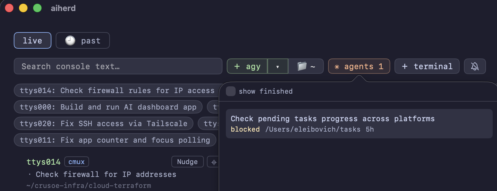

Watch every coding agent in one dashboard
You have six coding agents running in six panes. Five are working and one is blocked on a yes/no question. AIHerd tells you which.
brew install --cask aiherd-dev/aiherd/aiherdmacOS 14 (Sonoma) or newer · Apple Silicon or Intel

What it does
One dashboard over every terminal pane on the machine.
AIHerd watches the PTY devices your terminals are attached to, notices which
ones have a CLI coding agent on them — claude, codex,
agy, grok and a dozen others — and reads what is on
each screen. A small classifier compiled into the binary scores every screen for
"is this waiting on a human?", so a pane that has stopped to ask permission
surfaces immediately instead of sitting unnoticed behind three other windows.
It works across terminal programs: iTerm2, Terminal, tmux and cmux panes.
Features
Spots the pane that is waiting on you
An embedded question classifier scores each screen; panes that are blocked
on a prompt are called out. Nothing is sent anywhere — the model ships inside
the aih binary and runs locally.
Answer without switching windows
Type a reply, send a keypress, scroll, or click straight into any pane from the dashboard. The pane behaves exactly as if you had focused its terminal and typed there, because that is what happens underneath.
Nudge a stalled agent
Toggle nudging on a pane and AIHerd answers the routine prompts for you, so an agent that would have blocked on a confirmation keeps going.
Plain-language summaries
Once a pane goes quiet, an LLM running in-process writes a
short summary of what happened there. No Python, no uv, no venv:
the model runs inside aih itself, on Metal on Apple Silicon.
Semantic search across every session
Screens are indexed as you work, so you can search months of scrollback by meaning rather than exact string — and jump to the matching point in the stitched history of that pane. The search model is compiled in too.
Start new agents from the dashboard
Pick an agent and a working directory and AIHerd opens a pane for it.
Claude Code background sessions
Sessions with no terminal attached never show up in a pane view. AIHerd lists them anyway, counts the live ones on the button, and opens any of them in a real pane when you click it.
Reachable from your phone
By default AIHerd binds only a Unix socket, so it takes no TCP port at all.
Pass -p 8080 and the same dashboard is available in any browser on
your network.
Claude Code background sessions
A background session is a full Claude Code conversation that keeps running with no terminal attached. Nothing on a pane-based dashboard can see it — so one sitting blocked on a permission prompt waits indefinitely, in a window that does not exist.

Each row is one session: what it was asked to do, where it is running, how long it has been going, and its state — working, blocked (with what it is blocked on: a permission prompt, a question, a sandbox request), done, failed or stopped.
Hover a row to read its recent output without touching it. Click one and AIHerd opens a pane and attaches it there, so the session you were only watching becomes the session you're in — and it keeps running whether or not you close that pane.
The panes already on your grid are left out of the list, since
those are the sessions you can see. The button only appears when there is a
claude pane to begin with.
Screenshots
One session, three agents, three different terminal programs:
claude in a cmux pane, codex in iTerm2 and
grok in Terminal.

aih serve -p 8080.
The chips along the top are one line per pane, so you can read the state of
every agent at a glance.


Mouse support
Wheel and clicks go through to the real terminal, so a pane's own TUI responds as if you were sitting in front of it.
↑ scroll sent badge marks each tick that
went through, and claude's own scrollback moves.This one is terminal-specific. cmux forwards mouse events; iTerm2 and Terminal don't, and AIHerd says so on the button rather than letting you click into nothing. Everything else on this page works the same everywhere.
Usage
Open AIHerd.app and it starts aih serve itself over a Unix
socket. Everything below is for driving it from a terminal instead.
aih # serve on the Unix socket (the default)
aih serve -p 8080 # also serve on a TCP port, for a phone or browser
aih serve claude # only panes running a matching executable
aih find-terminals --no-monitor # print the panes AIHerd can see, and their TTYsNarrowing to specific panes
Pass --tty to pin the dashboard to an exact set of panes and
ignore every other terminal on the machine. Useful for a demo or a screenshot,
where you want four known agents on screen and nothing else:
# find the panes you care about
aih find-terminals --no-monitor
# then show only those
aih serve -p 8080 --tty ttys002,ttys004,ttys007,ttys009It takes bare names or /dev/ paths, repeats
(--tty ttys002 --tty ttys004) as well as comma-separated lists, and
overrides pinned panes — so the set you name is exactly the set you get.
Everything the dashboard knows, on stdout
Search, summaries and the question list all read the running server over that same Unix socket. So they work while the app is open, take no port, and cost nothing to start — the models are already loaded over there rather than being spun up per command.
aih summaries # what every pane is working on
aih questions # panes waiting on input, with their answer options
aih search "sentry crash" # live screens + history, each with its summary
aih search "sentry crash" --live # only what's on screen right now
aih search "trust prompt" --vector # only stored history, by meaning
aih search "trust prompt" --judge-tty ttys017 # ask the LLM if one pane is relevant, and why
aih summaries --json | jq -r '.[].topic' # --json on any of themPoint any of them at a different server with --url — a socket
path, or http://host:port for one started with -p.
The summarizer
Summaries need Apple Silicon with 16 GB or more. On first use the model
(~2.5 GB) downloads into
~/Library/Application Support/aiherd/models, and the dashboard shows
the progress on the pane that triggered it. Everything else works offline and
without it.
AIHERD_SUMMARIZER | Effect |
|---|---|
off | No LLM at all. |
unsloth/Qwen3-14B-GGUF | A bigger judge. Any Hugging Face GGUF repo works; without a filename, <repo>-Q4_K_M.gguf is assumed. |
unsloth/Qwen3-14B-GGUF:Qwen3-14B-Q5_K_M.gguf | An explicit file in that repo. |
What it installs
| Path | What |
|---|---|
/Applications/AIHerd.app | Native SwiftUI dashboard, universal binary. |
/usr/local/bin/aih | The CLI. |
Uninstall
brew uninstall --cask aiherd # app, CLI and bundled assets
brew uninstall --zap --cask aiherd # also the text index, settings and logsStop hunting for the blocked pane
One command, and every agent on the machine is in one window.
brew install --cask aiherd-dev/aiherd/aiherd